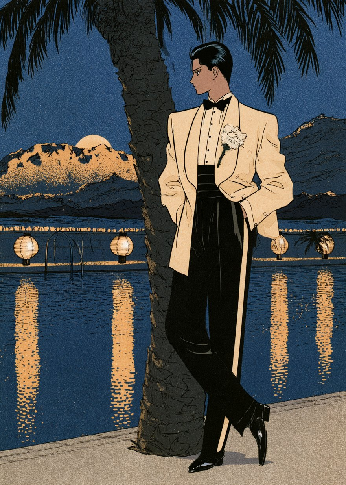

ÉPOQUE
September · 1934The Hollywood NumberNo.02

1985년 서울. 두 번째 출장지는 1934년의 할리우드다. 9년 전 파리에서 만났던 모델은 단발을 길러 턱선까지 웨이브를 넣었고, 머리는 플래티넘으로 탈색했다. 짙은 콜 아이라인은 사라지고, 눈썹은 가늘게 뽑아 높은 아치로 다시 그렸다.
치맛단은 다시 내려왔다. 낮에는 종아리 중간, 밤에는 바닥까지. 원단을 사선으로 재단한 바이어스 컷 드레스는 몸의 곡선을 따라 흘러내렸고, 등은 깊게 파였다. 남자들의 어깨는 넓어졌고 바지 허리는 배꼽 위로 올라갔다.
1934년 7월 1일부터 할리우드 영화는 심의 승인서 없이 개봉할 수 없게 됐다. 이번 호는 그해 스튜디오와 나이트클럽, 해변과 비행장에서 찍어 온 장면들이다.
— ÉPOQUE 편집부, 1985년 서울
여성 룩 다섯 벌 — 스튜디오에서 비행장까지


한 장의 포트레이트를 위해 거대한 조명이 차례로 켜지고, 사진가는 대형 뷰 카메라의 검은 천 아래로 들어간다. 위에서 내리꽂는 단단한 빛과 깊은 그림자가 이 시대 글래머 사진의 문법이었다.

1934년 선셋 스트립에 문을 연 카페 트로카데로는 곧바로 스타들이 ‘보이러’ 가는 곳이 됐다. 이곳에서 찍힌 밤의 사진이 다음 날 업계지에 실렸다. 등을 깊게 판 바이어스 컷 가운은 계단을 내려가는 뒷모습을 위해 만든 옷처럼 보였다.

밤의 가운과 달리 낮의 옷은 단정하다. 어깨는 넓게, 허리는 벨트로 잘록하게, 스커트는 종아리 중간까지. 작은 모자는 한쪽 눈 위로 비스듬히 얹는다.

해변의 유행은 비치 파자마였다. 원래 집 안에서 입던 라운지 파자마에서 온 옷이라, 그걸 입고 밖에 나간다는 것 자체가 작은 스캔들이었다. 바람이 불 때마다 통 넓은 바지가 돛처럼 부푼다.

번쩍이는 은빛 프로펠러기와 그 앞의 카멜 코트. 넓은 어깨와 커다란 폭스 칼라가 이 시대 여행복의 실루엣이다.
어깨는 넓게, 허리는 높게


런던 재단사들이 만든 드레이프 컷이 1930년대 남자의 몸을 바꿨다. 어깨와 가슴에 여유를 주고 허리를 잡아 넓은 어깨의 V자 실루엣을 만들고, 바지는 주름을 넣어 넉넉하게 떨어뜨린다.

더운 휴양지의 저녁에는 검은 재킷 대신 흰 디너 재킷을 입었다. 바지는 검은 턱시도 바지 그대로, 단추 구멍엔 흰 카네이션 한 송이.
1934년, 영화가 바뀌던 해

1934년, 빨강·초록·파랑을 따로 담는 3색 테크니컬러가 실사 영화에 쓰이기 시작했다. 그해 8월 말 개봉한 단편 「라 쿠카라차」는 이 방식으로 찍은 초기 실사 영화로 이름을 남겼다. 장편은 이듬해에 나온다.
제작 규범은 1930년에 만들어졌지만 오랫동안 제대로 지켜지지 않았다. 1934년 7월 1일, 제작규범관리국(PCA)이 출범하면서 이날 이후의 모든 영화는 승인서를 받아야 개봉할 수 있게 됐다.
그래서 1930년부터 이날까지의 할리우드 영화를 따로 ‘프리코드(Pre-Code)’ 시대라 부른다.